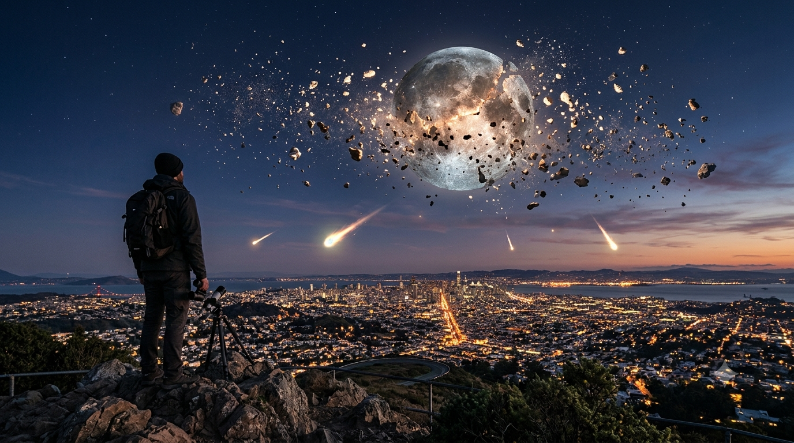
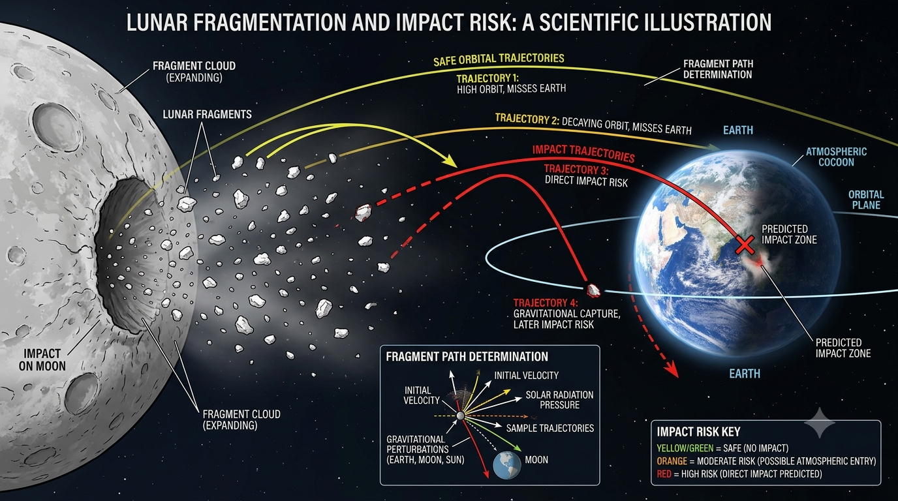
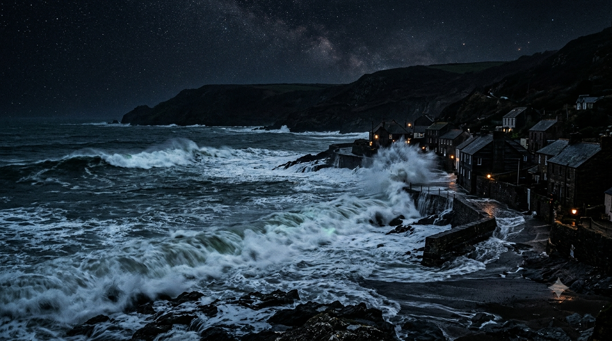

What If Earth’s Moon Were Destroyed? Tides, Animals, Debris and Dark Nights
Imagine looking up one night and seeing the Moon split apart. Some fragments might remain in orbit, some could be thrown onto paths that cross Earth, and others might escape or clump together again. But a real breakup would not guarantee a neat ring or an immediate rain of rocks. The result would depend on how the Moon was broken apart.
There is an important distinction: the Moon magically disappearing is not the same event as physically shattering it. The first lets us explore what its gravity and light do for Earth. The second adds a potentially catastrophic debris hazard—and the energy needed to disperse the Moon could threaten Earth itself.

What Does “The Moon Is Destroyed” Actually Mean?
The Moon is held together by its own gravity. Breaking it into rubble is not the same as making its mass disappear. To disperse the fragments widely enough that they cannot readily reassemble would require an extraordinary amount of energy.
- Magical disappearance: The Moon’s mass, gravity and reflected light vanish, while Earth is left unharmed. This impossible scenario isolates the Moon’s normal influence on tides, night lighting and long-term orbital behaviour.
- Physical breakup: Fragments retain motion and follow separate paths. Some might remain in orbit, collide and reassemble, fall toward Earth or escape into solar orbit.
A natural impact energetic enough to disperse the Moon could also damage Earth directly. A clean lunar destruction that leaves our planet untouched is therefore an assumption, not the default physical outcome.
The First Minutes and Hours
If the Moon simply vanished, there would be no planet-wide earthquake, no air rushing into space and no oceans leaping out of their basins. Earth’s gravity would still hold the atmosphere, people and oceans in place. The Moon’s disappearance would change tidal forces, not switch off gravity.
The most obvious change would be in the sky: no Moon, phases, moonrise or moonset, and no future lunar or solar eclipses involving it. But Earth would not be completely dark. The Sun, stars, planets, airglow and artificial lights would remain.
Ocean tides would begin adjusting to the loss of lunar pull, but existing tidal motion would not vanish everywhere at the same instant. The response would vary between ocean basins and coastlines. A sudden tsunami would require a separate disturbance, such as a large fragment striking the ocean.
Could Pieces of the Moon Crash Into Earth?
In a physical breakup, fragments would not simply stop moving and fall vertically toward Earth. The Moon already travels around Earth at high orbital speed, and its pieces would initially retain much of that motion. Their future paths would depend on how the breakup changed their velocities.

Several outcomes are possible
Some debris could remain in orbit, collide and grind into smaller pieces, or clump together again. A temporary, uneven ring is possible in some scenarios, but it is not guaranteed. Other fragments could enter Earth-crossing paths, escape into solar orbit or eventually fall inward.
Small pieces would mostly burn up in the atmosphere. Larger fragments could survive farther down, creating powerful airbursts or impact craters and causing severe local or regional damage. The danger would depend on fragment size, speed, number, trajectory and timing—not on a fixed percentage of the Moon falling to Earth.
The initial breakup itself could be more dangerous than the later debris. An event powerful enough to disperse the Moon could transfer enormous energy to the Earth–Moon system. Without a defined cause and trajectory, nobody can give a reliable impact countdown or predict the final debris pattern.
Darker Nights and the Loss of Moonlight
The Moon does not make its own visible light; it reflects sunlight. Without it, bright full-moon nights would disappear. Rural areas, forests, deserts and coastlines would be noticeably darker during the parts of the month that currently receive strong moonlight. Stars would be easier to see, while artificial lights, twilight and airglow would still illuminate the sky.
For astronomy, darker skies could be an advantage. For people and animals that use moonlight for night-time movement, feeding or orientation, the change could be disruptive. The effect would vary with cloud cover, artificial lighting, habitat and the species involved. It would remove one regular source of natural night light—not all natural illumination.
What Happens to Tides and Coastal Ecosystems?
The Moon is the main driver of ocean tides, while the Sun also contributes. If the Moon vanished, lunar tidal forcing would disappear but solar tides would remain. NOAA explains that the Sun’s tide-generating force is a little under half the Moon’s; however, local tide heights are not a simple reading of those forces.
Coastline shape, seafloor depth, ocean-basin resonances, winds and atmospheric pressure all influence the water level at a particular shore. Many places would experience substantially smaller or reorganised tidal ranges, but there would be no single percentage reduction that applies worldwide. Existing tide tables would become unreliable and would need to be recalculated.
Intertidal habitats—areas alternately covered and exposed by the tide—support mussels, crabs, barnacles, snails, sea stars and many other organisms. Changed water levels and currents would shift where these species can feed, breathe, reproduce or avoid drying out. Estuaries and shallow seas could also experience changes in the movement of nutrients, larvae, oxygen and sediment.

Wind-driven currents, temperature and salinity differences, river flows and large-scale ocean circulation would continue. The oceans would not stop moving. The biggest effects would be regional: some coastal habitats, ports, fishing communities and tidal-energy facilities would need to adapt to a different pattern of water movement.
Wildlife, Breeding Cycles and the New Night
Animals would not all panic or become unable to navigate. Some species use moonlight, lunar timing or tidal cycles as cues, while others rely more on smell, landmarks, stars, the Sun or Earth’s magnetic field. Removing the Moon would favour some behaviours and disrupt others; there would be no universal winner.
Predators, prey and insects
Moonlight can make prey easier for visual predators to spot, but it can also help animals see approaching danger. Some mammals change their activity with lunar brightness, while others show little response. No simple rule says predators would thrive or prey would become safer. Nocturnal insects and animals that use celestial light for orientation could also face changes, but temperature, rainfall, habitat and artificial lighting would remain important influences.
Sea turtles and coral spawning
Some sea-turtle hatchlings use the brighter, open seaward horizon to find the ocean. Without moonlight, the night-time light pattern would change, but stars, beach shape and artificial lighting would still matter; it would not make every hatchling helpless.
Some corals synchronise mass spawning with lunar phases, moonrise or patterns of darkness, alongside seasonal cues such as water temperature. Other marine organisms also time reproduction or movement around lunar and tidal cycles. Losing those signals could disrupt synchronisation in particular species, but it would not stop all coral reproduction or cause every reef to die. The consequences would depend on how strongly each species relies on lunar cues and whether it can use other signals.
Would Plants, Forests or Weather Change?
Plants would not stop growing. Sunlight remains the main energy source for photosynthesis, and plants would still respond to day length, temperature, water and nutrients. Moonlight is far weaker than daylight, so its disappearance would not turn forests or crops into lifeless vegetation.
Some coastal plants, including mangroves and salt-marsh vegetation, could be affected indirectly if tidal flooding, sediment movement or salinity changed. Pollinators and herbivores might also alter their activity, creating local knock-on effects. These changes would be uneven and species-specific.
Weather would not suddenly collapse either. Winds, clouds, storms and rainfall are driven mainly by solar heating, the atmosphere, oceans and Earth’s rotation. The Moon’s removal would not instantly create worldwide hurricanes, stop winds or trigger a global ice age. Long-term climate questions depend more on possible changes to Earth’s axial tilt over geological timescales.
Earth’s Tilt, Seasons and Rotation Over Long Timescales
Earth’s axial tilt gives us the seasons. The Moon’s gravity helps stabilise the long-term behaviour of that tilt, but scientists do not agree that a Moonless Earth would inevitably develop extreme, chaotic swings on a predictable schedule.
A landmark 1993 model by Laskar, Joutel and Robutel found a much wider range of possible axial-tilt behaviour without the Moon. A later study by Lissauer, Barnes and Chambers tested different starting conditions and found that some Moonless-Earth simulations kept their tilt within a comparatively limited range for hundreds of millions of years. The careful conclusion is that the Moon helps stabilise Earth’s present axial behaviour, but the outcome without it would depend on the initial conditions and wider planetary dynamics.
If Earth’s tilt changed substantially, seasonal contrasts and climate zones could eventually change too. That would unfold over geological timescales, not days or months, and would interact with greenhouse gases, oceans and other climate processes. There is no reliable date for a future climate catastrophe.
The Moon also helps slow Earth’s rotation through tidal interactions, while gradually moving away from us. If it vanished, its contribution to tidal braking would stop, but Earth’s day would not suddenly become shorter or longer. The Sun’s smaller tidal effect would remain, and Earth would continue orbiting the Sun normally. A physical breakup would be more complicated because the fragments would retain mass and angular momentum.
How Would Human Life Change?
In the disappearance-only scenario, humanity would not face automatic extinction. The most immediate changes would be scientific, cultural and practical rather than the collapse of every modern technology.
- Coastal work: Fishing, shellfish harvesting, port operations and tidal-energy facilities would need revised tide predictions and schedules.
- Calendars and culture: Lunar calendars, festivals and observances tied to moon phases would change, while solar calendars would continue.
- Science and exploration: The Moon would no longer be available for research or future lunar missions, removing a nearby record of Solar System history.
- Navigation and satellites: GPS and ordinary navigation would keep working if their infrastructure remained intact. The Moon’s disappearance would not make satellites fall out of orbit or send Earth away from the Sun.
If fragments were striking Earth, the impacts would become the urgent human threat. Without that debris, society would mainly need to adapt to altered tides, ecological changes and darker natural nights.
A Timeline of Consequences
This timeline describes the magical-disappearance scenario. A physical breakup has no single reliable schedule because fragments could hit Earth, remain in orbit, escape or reassemble.
| Time | Likely changes |
|---|---|
| Minutes to hours | Moonlight and lunar gravity disappear; lunar phases and future eclipses end. Existing tides begin adjusting. |
| Days to weeks | Nights become darker where moonlight would have been. Coastal tide patterns change and familiar predictions become unreliable. |
| Months to years | Some species may alter activity, migration or reproduction where lunar light or tides were important cues. |
| Decades to centuries | Coastal ecosystems and communities continue adapting to different tidal patterns. |
| Thousands to millions of years | Differences in Earth’s long-term axial and rotational evolution may become more important; the scale remains uncertain. |
| After a physical breakup | Fragments follow different trajectories. The impact hazard depends on the breakup and cannot be assigned one universal timeline. |
The Final Picture: A Changed World, Not One Simple Disaster
If the Moon vanished without an explosion, Earth would remain recognisably Earth. Gravity, sunlight, weather and most ecosystems would continue. Nights would be darker, lunar tides would be lost, and coastal habitats and species that rely on lunar or tidal cues would face real disruption.
The long-term climate story is less certain. The Moon helps stabilise Earth’s present axial behaviour, but simulations do not show that every Moonless Earth must quickly tip into an extreme climate. Any major changes would unfold over geological timescales and depend on the conditions.
A physical breakup is a different and potentially much more dangerous event. Debris could hit Earth, but it is not guaranteed to do so in one uniform wave. The energy needed to disperse the Moon could itself threaten our planet.
Sources and Further Reading
This is a hypothetical scenario. These sources explain the real science behind tides, lunar destruction, biological timing and Earth’s long-term axial behaviour; they do not predict one exact outcome for a Moonless Earth.
- NOAA — Tides: how the Moon and Sun generate tides and why local conditions matter.
- NASA Goddard Cosmicopia — Earth and Moon Q&A: background on the Earth–Moon system and hypothetical lunar destruction.
- Laskar, Joutel and Robutel — “Stabilization of the Earth’s obliquity by the Moon” (Nature, 1993): classic modelling of the Moon’s influence on Earth’s axial tilt.
- Lissauer, Barnes and Chambers — “The Rotation of a Moonless Earth” (2012/2013): simulations of possible long-term behaviour for a Moonless Earth.
- Lin et al. — “Moonrise timing is key for synchronized spawning in coral Dipsastraea speciosa” (PNAS, 2021): research on lunar timing and coral reproduction.
This article discusses hypothetical outcomes using established physical principles. A real lunar breakup would depend on the cause, energy, direction of the event and the resulting fragment trajectories; the exact outcome cannot be forecast from the phrase “the Moon is destroyed” alone.
Suggested Quizzes
Test your survival instincts and your knowledge of fictional worlds and disaster scenarios.